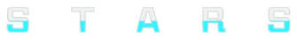

DCPGS
cluster nums
dataset
gowalla
brightkite
params
ε
ω
τ
maxD
confirm
k-stc params:
close
confirm
spatial_skylines params:
confirm
Clustering
Geo-social network
Stockholm Sweden
Malmo Sweden
Gothenburg Sweden
Austin US
London UK
Newcastle Upon Tyne UK
Oslo Norway
Zurich Switzerland
Spatial textual clustering
Simple KSTC
Textually spatial skylines
1-3-1
Mapbox test ground
1-4-1
Visualization
KDV
kdv
Temporal KDV
2-2-1
Line KDV
2-3-1

Spatial-Temporal Analytics with Rapid System
深圳大学
深圳大学计算机与软件学院
大数据与应用数据研究所